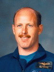

Lyndon B. Johnson Space Center
Houston, Texas 77058
|
National Aeronautics and Space Administration Lyndon B. Johnson Space Center Houston, Texas 77058 |
 |
Biographical Data |
||
Kenneth D. Bowersox (Captain, USN, RET.)
NASA ASTRONAUT (FORMER)
PERSONAL DATA: Born November 14, 1956, in Portsmouth, Virginia, but considers Bedford, Indiana, to be his hometown.
EDUCATION: Graduated from Bedford High School, Bedford, Indiana, in 1974; received a bachelor of science degree in aerospace engineering from the United States Naval Academy in 1978, and a master of science degree in mechanical engineering from Columbia University in 1979.
EXPERIENCE: Bowersox received his commission in the United States Navy in 1978 and was designated a Naval Aviator in 1981. He was then assigned to Attack Squadron 22, aboard the USS Enterprise, where he served as a Fleet A-7E pilot, logging over 300 carrier arrested landings. Following graduation from the United States Air Force Test Pilot School at Edwards Air Force Base, California, in 1985, he moved to the Naval Weapon Center at China Lake, California, where he spent the next year and a half as a test pilot flying A-7E and F/A-18 aircraft until advised of his selection to the astronaut program.
NASA EXPERIENCE: Selected as an astronaut candidate by NASA in June 1987, Bowersox completed a one-year training and evaluation program in August 1988. He held a variety of assignments since then including: flight software testing in the Shuttle Avionics Integration Laboratory (SAIL); Technical Assistant to the Director of Flight Crew Operations; Astronaut Office representative for Orbiter landing and rollout issues; Chief of the Astronaut Office Safety Branch; Chairman of the Spaceflight Safety Panel; during several Shuttle missions he served as a spacecraft communicator (CAPCOM) in the Houston Mission Control Center; was back-up to the first International Space Station crew; and served as the Director, Flight Crew Operations Directorate. A five flight veteran, Bowersox logged over 211 days in space including 2 EVAs totaling 13 hours and 17 minutes. He was the pilot on STS-50 (1992) and STS-61 (1993), spacecraft commander on STS-73 (1995) and STS-82 (1997), and most recently served as Expedition-6 Crew Commander for 5-1/2 months aboard the International Space Station (2002-2003). Bowersox retired from NASA and the U.S. Navy in December 2006.
SPACE FLIGHT EXPERIENCE: STS-50, June 25-July 9, 1992, was the first flight of the United States Microgravity Laboratory and the first Extended Duration Orbiter flight. Over a two-week period, the STS-50 flight crew aboard Space Shuttle Columbia conducted a wide variety of experiments relating to materials processing and fluid physics in a microgravity environment.
STS-61, Dec. 2-13, 1993, was the Hubble Space Telescope (HST) servicing and repair mission. During the 11-day flight, the HST was captured and restored to full capacity through a record five space walks by four astronauts.
STS-73, Oct. 20 to Nov. 5, 1995, was the second flight of the United States Microgravity Laboratory. The mission focused on materials science, biotechnology, combustion science, the physics of fluids, and numerous scientific experiments housed in the pressurized Spacelab module.
STS-82, Feb. 11-21, 1997, was the second Hubble Space Telescope (HST) maintenance mission. During the flight, the crew retrieved and secured the HST in Discovery’s payload bay. In five space walks, two teams installed two new spectrometers and eight replacement instruments, as well as replacing insulation patches over three compartments containing key data processing, electronics and scientific instrument telemetry packages. Following completion of upgrades and repairs, HST was boosted to a higher orbit and redeployed.
Expedition-6, Nov. 23, 2002 to May 3, 2003. During 5-1/2 months aboard the International Space Station, the crew worked with numerous U.S. and Russian science experiments. Bowersox and ISS Science Officer Don Pettit performed 2 EVAs (spacewalks) to continue the external outfitting of the orbital outpost. The Expedition-6 crew launched on STS-113 Space Shuttle Endeavour and returned to Earth on Soyuz TMA-1.
FEBRUARY 2007
This is the only version available from NASA. Updates must be sought direct from the above named individual.